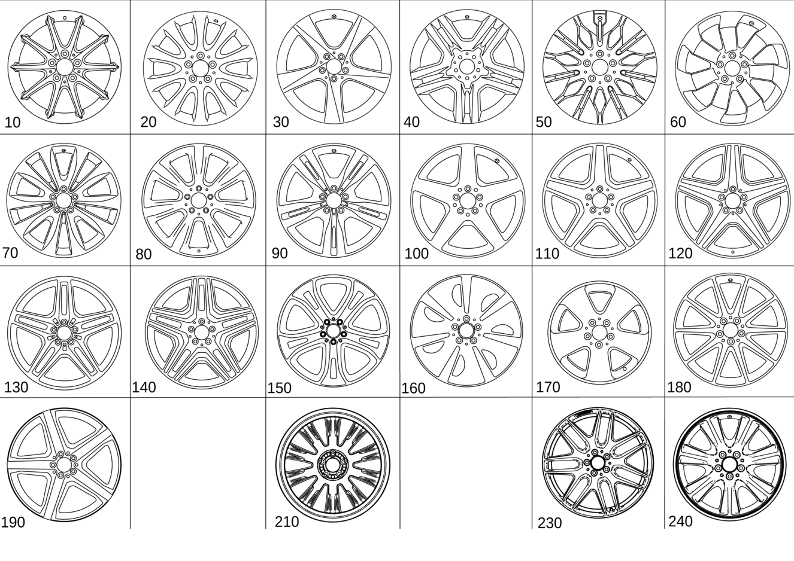

| № | Артикул | Название | Кол. | Примечание | Ограничение |
|---|---|---|---|---|---|
| 10 | A 166 401 05 02 | Дисковое колесо | 2 | 10\-спицевое колесо переднего моста; 7.5J X 17 H2 ET 53 [002869] СОБЛЮДАТЬ РУКОВОДСТВО ПО ВЫПОЛНЕНИЮ РАБОТ В WIS-NET#GF40.10-P-0804B# | 25R |
| 10 | A 166 401 05 02 | Дисковое колесо | 2 | 10\-спицевое колесо заднего моста; 7.5J X 17 H2 ET 53 [002869] СОБЛЮДАТЬ РУКОВОДСТВО ПО ВЫПОЛНЕНИЮ РАБОТ В WIS-NET#GF40.10-P-0804B# | 25R |
| 20 | A 166 401 06 02 | Дисковое колесо | 2 | 10\-спицевое колесо переднего моста; 8J X 18 H2 ET 56 [002869] СОБЛЮДАТЬ РУКОВОДСТВО ПО ВЫПОЛНЕНИЮ РАБОТ В WIS-NET#GF40.10-P-0804B# | R41 |
| 20 | A 166 401 06 02 | Дисковое колесо | 2 | 10\-спицевое колесо заднего моста; 8J X 18 H2 ET 56 [002869] СОБЛЮДАТЬ РУКОВОДСТВО ПО ВЫПОЛНЕНИЮ РАБОТ В WIS-NET#GF40.10-P-0804B# | R41 |
| 30 | A 166 401 02 02 | Дисковое колесо | 2 | 5\-спицевое колесо, передний мост; 8.5J X 19 H2 ET 59 [002869] СОБЛЮДАТЬ РУКОВОДСТВО ПО ВЫПОЛНЕНИЮ РАБОТ В WIS-NET#GF40.10-P-0804B# | R39 |
| 30 | A 166 401 02 02 | Дисковое колесо | 2 | 5\-спицевое колесо заднего моста; 8.5J X 19 H2 ET 59 [002869] СОБЛЮДАТЬ РУКОВОДСТВО ПО ВЫПОЛНЕНИЮ РАБОТ В WIS-NET#GF40.10-P-0804B# | R39 |
| 40 | A 166 401 09 02 | Дисковое колесо | 2 | Колесо с 5 сдвоенными спицами, передний мост; 9J X 20 H2 ET 57 [002869] СОБЛЮДАТЬ РУКОВОДСТВО ПО ВЫПОЛНЕНИЮ РАБОТ В WIS-NET#GF40.10-P-0804B# | R33 |
| 40 | A 166 401 09 02 | Дисковое колесо | 2 | Колесо с 5 сдвоенными спицами, задний мост; 9J X 20 H2 ET 57 [002869] СОБЛЮДАТЬ РУКОВОДСТВО ПО ВЫПОЛНЕНИЮ РАБОТ В WIS-NET#GF40.10-P-0804B# | R33 |
| 50 | A 166 401 10 02 | Дисковое колесо | 2 | Колесо с 7 сдвоенными спицами, передний мост; 7.5J X 17 H2 ET 53 [002869] СОБЛЮДАТЬ РУКОВОДСТВО ПО ВЫПОЛНЕНИЮ РАБОТ В WIS-NET#GF40.10-P-0804B# | R24 |
| 50 | A 166 401 10 02 | Дисковое колесо | 2 | Колесо с 7 сдвоенными спицами, задний мост; 7.5J X 17 H2 ET 53 [002869] СОБЛЮДАТЬ РУКОВОДСТВО ПО ВЫПОЛНЕНИЮ РАБОТ В WIS-NET#GF40.10-P-0804B# | R24 |
| 60 | A 166 401 16 02 | Дисковое колесо | 2 | 7\-спицевое колесо, передний мост; 8J X 18 H2 ET 56.5 [002869] СОБЛЮДАТЬ РУКОВОДСТВО ПО ВЫПОЛНЕНИЮ РАБОТ В WIS-NET#GF40.10-P-0804B# | 03R |
| 60 | A 166 401 16 02 | Дисковое колесо | 2 | 7\-спицевое колесо заднего моста; 8J X 18 H2 ET 56.5 [002869] СОБЛЮДАТЬ РУКОВОДСТВО ПО ВЫПОЛНЕНИЮ РАБОТ В WIS-NET#GF40.10-P-0804B# | 03R |
| 70 | A 166 401 18 02 | Дисковое колесо | 2 | 10\-спицевое колесо переднего моста; 9J X 20 H2 ET 57 [002869] СОБЛЮДАТЬ РУКОВОДСТВО ПО ВЫПОЛНЕНИЮ РАБОТ В WIS-NET#GF40.10-P-0804B# | 50R |
| 70 | A 166 401 18 02 | Дисковое колесо | 2 | 10\-спицевое колесо заднего моста; 9J X 20 H2 ET 57 [002869] СОБЛЮДАТЬ РУКОВОДСТВО ПО ВЫПОЛНЕНИЮ РАБОТ В WIS-NET#GF40.10-P-0804B# | 50R |
| 80 | A 166 401 08 02 | Дисковое колесо | 2 | 7\-спицевое колесо, передний мост; 8.5J X 19 H2 ET 59 [002869] СОБЛЮДАТЬ РУКОВОДСТВО ПО ВЫПОЛНЕНИЮ РАБОТ В WIS-NET#GF40.10-P-0804B# | R53 |
| 80 | A 166 401 08 02 | Дисковое колесо | 2 | 7\-спицевое колесо заднего моста; 8.5J X 19 H2 ET 59 [002869] СОБЛЮДАТЬ РУКОВОДСТВО ПО ВЫПОЛНЕНИЮ РАБОТ В WIS-NET#GF40.10-P-0804B# | R53 |
| 90 | A 166 401 07 02 | Дисковое колесо | 2 | Колесо с 5 сдвоенными спицами, передний мост; 8J X 19 H2 ET 56 [002869] СОБЛЮДАТЬ РУКОВОДСТВО ПО ВЫПОЛНЕНИЮ РАБОТ В WIS-NET#GF40.10-P-0804B# | R55 |
| 90 | A 166 401 11 00 | Дисковое колесо | 2 | Колесо с 5 сдвоенными спицами, передний мост; 8.5J X 19 H2 ET 59 [002869] СОБЛЮДАТЬ РУКОВОДСТВО ПО ВЫПОЛНЕНИЮ РАБОТ В WIS-NET#GF40.10-P-0804B# | 65R |
| 90 | A 166 401 07 02 | Дисковое колесо | 2 | Колесо с 5 сдвоенными спицами, задний мост; 8J X 19 H2 ET 56 [002869] СОБЛЮДАТЬ РУКОВОДСТВО ПО ВЫПОЛНЕНИЮ РАБОТ В WIS-NET#GF40.10-P-0804B# | R55 |
| 90 | A 166 401 11 00 | Дисковое колесо | 2 | Колесо с 5 сдвоенными спицами, задний мост; 8.5J X 19 H2 ET 59 [002869] СОБЛЮДАТЬ РУКОВОДСТВО ПО ВЫПОЛНЕНИЮ РАБОТ В WIS-NET#GF40.10-P-0804B# | 65R |
| 100 | A 166 401 19 02 | Колесо со спицами | 2 | 5\-спицевое колесо, передний мост; 8.5J X 19 H2 ET 59 [002869] СОБЛЮДАТЬ РУКОВОДСТВО ПО ВЫПОЛНЕНИЮ РАБОТ В WIS-NET#GF40.10-P-0804B# | 780 |
| 100 | A 166 401 19 02 | Колесо со спицами | 2 | 5\-спицевое колесо заднего моста; 8.5J X 19 H2 ET 59 [002869] СОБЛЮДАТЬ РУКОВОДСТВО ПО ВЫПОЛНЕНИЮ РАБОТ В WIS-NET#GF40.10-P-0804B# | 780 |
| 110 | A 166 401 20 02 | Колесо со спицами | 2 | 5\-спицевое колесо, передний мост; 9J X 20 H2 ET 57 [002869] СОБЛЮДАТЬ РУКОВОДСТВО ПО ВЫПОЛНЕНИЮ РАБОТ В WIS-NET#GF40.10-P-0804B# | 758 |
| 110 | A 166 401 20 02 | Колесо со спицами | 2 | 5\-спицевое колесо, передний мост; 9J X 20 H2 ET 57 [002869] СОБЛЮДАТЬ РУКОВОДСТВО ПО ВЫПОЛНЕНИЮ РАБОТ В WIS-NET#GF40.10-P-0804B# | 681/758/775 |
| 110 | A 166 401 20 02 | Колесо со спицами | 2 | 5\-спицевое колесо заднего моста; 9J X 20 H2 ET 57 [002869] СОБЛЮДАТЬ РУКОВОДСТВО ПО ВЫПОЛНЕНИЮ РАБОТ В WIS-NET#GF40.10-P-0804B# | 758 |
| 110 | A 166 401 20 02 | Колесо со спицами | 2 | 5\-спицевое колесо заднего моста; 9J X 20 H2 ET 57 [002869] СОБЛЮДАТЬ РУКОВОДСТВО ПО ВЫПОЛНЕНИЮ РАБОТ В WIS-NET#GF40.10-P-0804B# | 681/758/775 |
| 120 | A 166 401 22 02 | Колесо со спицами | 2 | 5\-спицевое колесо, передний мост; 9J X 20 H2 ET 41 [002869] СОБЛЮДАТЬ РУКОВОДСТВО ПО ВЫПОЛНЕНИЮ РАБОТ В WIS-NET#GF40.10-P-0804B# | 778 |
| 120 | A 166 401 22 02 | Колесо со спицами | 2 | 5\-спицевое колесо заднего моста; 9J X 20 H2 ET 41 [002869] СОБЛЮДАТЬ РУКОВОДСТВО ПО ВЫПОЛНЕНИЮ РАБОТ В WIS-NET#GF40.10-P-0804B# | 778 |
| 130 | A 166 401 21 02 | Колесо со спицами | 2 | Колесо с 5 сдвоенными спицами, передний мост; 9J X 21 H2 ET 53 [002869] СОБЛЮДАТЬ РУКОВОДСТВО ПО ВЫПОЛНЕНИЮ РАБОТ В WIS-NET#GF40.10-P-0804B# | 755/757 |
| 130 | A 166 401 21 02 | Колесо со спицами | 2 | Колесо с 5 сдвоенными спицами, передний мост; 9J X 21 H2 ET 53 [002869] СОБЛЮДАТЬ РУКОВОДСТВО ПО ВЫПОЛНЕНИЮ РАБОТ В WIS-NET#GF40.10-P-0804B# | 683/755/757 |
| 130 | A 166 401 37 00 | Колесо со спицами | 2 | Колесо с 5 сдвоенными спицами, передний мост; 9JX21H2 ET53,5 [002869] СОБЛЮДАТЬ РУКОВОДСТВО ПО ВЫПОЛНЕНИЮ РАБОТ В WIS-NET#GF40.10-P-0804B# | 683/755 |
| 130 | A 166 401 21 02 | Колесо со спицами | 2 | Колесо с 5 сдвоенными спицами, передний мост; 9J X 21 H2 ET 53 [002869] СОБЛЮДАТЬ РУКОВОДСТВО ПО ВЫПОЛНЕНИЮ РАБОТ В WIS-NET#GF40.10-P-0804B# | 683/755 |
| 130 | A 166 401 37 00 | Колесо со спицами | 2 | Колесо с 5 сдвоенными спицами, передний мост; 9JX21H2 ET53,5 [002869] СОБЛЮДАТЬ РУКОВОДСТВО ПО ВЫПОЛНЕНИЮ РАБОТ В WIS-NET#GF40.10-P-0804B# | 683/755 |
| 130 | A 166 401 37 00 | Колесо со спицами | 2 | Колесо с 5 сдвоенными спицами, передний мост; 9JX21H2 ET53,5 [002869] СОБЛЮДАТЬ РУКОВОДСТВО ПО ВЫПОЛНЕНИЮ РАБОТ В WIS-NET#GF40.10-P-0804B# | (683/755)+U29 |
| 130 | A 166 401 21 02 | Колесо со спицами | 2 | Колесо с 5 сдвоенными спицами, задний мост; 9J X 21 H2 ET 53 [002869] СОБЛЮДАТЬ РУКОВОДСТВО ПО ВЫПОЛНЕНИЮ РАБОТ В WIS-NET#GF40.10-P-0804B# | 755/757 |
| 130 | A 166 401 21 02 | Колесо со спицами | 2 | Колесо с 5 сдвоенными спицами, задний мост; 9J X 21 H2 ET 53 [002869] СОБЛЮДАТЬ РУКОВОДСТВО ПО ВЫПОЛНЕНИЮ РАБОТ В WIS-NET#GF40.10-P-0804B# | 683/755/757 |
| 130 | A 166 401 37 00 | Колесо со спицами | 2 | Колесо с 5 сдвоенными спицами, задний мост; 9JX21H2 ET53,5 [002869] СОБЛЮДАТЬ РУКОВОДСТВО ПО ВЫПОЛНЕНИЮ РАБОТ В WIS-NET#GF40.10-P-0804B# | 683/755 |
| 140 | A 166 401 23 02 | Колесо со сдвоен. спицами | 2 | Колесо с 5 сдвоенными спицами, передний мост; 10J X 21 H2 ET 56 [002869] СОБЛЮДАТЬ РУКОВОДСТВО ПО ВЫПОЛНЕНИЮ РАБОТ В WIS-NET#GF40.10-P-0804B# | 685/798 |
| 140 | A 166 401 23 02 | Колесо со сдвоен. спицами | 2 | Колесо с 5 сдвоенными спицами, задний мост; 10J X 21 H2 ET 56 [002869] СОБЛЮДАТЬ РУКОВОДСТВО ПО ВЫПОЛНЕНИЮ РАБОТ В WIS-NET#GF40.10-P-0804B# | 685/798 |
| 150 | A 166 401 27 02 | Дисковое колесо | 2 | Колесо с 5 сдвоенными спицами, передний мост; 9J X 21 H2 ET 53 [002869] СОБЛЮДАТЬ РУКОВОДСТВО ПО ВЫПОЛНЕНИЮ РАБОТ В WIS-NET#GF40.10-P-0804B# | 07R |
| 150 | A 166 401 27 02 | Дисковое колесо | 2 | Колесо с 5 сдвоенными спицами, задний мост; 9J X 21 H2 ET 53 [002869] СОБЛЮДАТЬ РУКОВОДСТВО ПО ВЫПОЛНЕНИЮ РАБОТ В WIS-NET#GF40.10-P-0804B# | 07R |
| 160 | A 166 401 29 02 | Дисковое колесо | 2 | 7\-спицевое колесо, передний мост; 8.5 J X 19 H2 ET 62 [002869] СОБЛЮДАТЬ РУКОВОДСТВО ПО ВЫПОЛНЕНИЮ РАБОТ В WIS-NET#GF40.10-P-0804B# | 06R+-(832+703) |
| 160 | A 166 401 29 02 | Дисковое колесо | 2 | 7\-спицевое колесо заднего моста; 8.5 J X 19 H2 ET 62 [002869] СОБЛЮДАТЬ РУКОВОДСТВО ПО ВЫПОЛНЕНИЮ РАБОТ В WIS-NET#GF40.10-P-0804B# | 06R+-(832+703) |
| 170 | A 166 401 13 00 | Дисковое колесо | 2 | 5\-спицевое колесо, передний мост; 9J X 20 H2 ET 57 [002869] СОБЛЮДАТЬ РУКОВОДСТВО ПО ВЫПОЛНЕНИЮ РАБОТ В WIS-NET#GF40.10-P-0804B# | 29R |
| 170 | A 166 401 13 00 | Дисковое колесо | 2 | 5\-спицевое колесо заднего моста; 9J X 20 H2 ET 57 [002869] СОБЛЮДАТЬ РУКОВОДСТВО ПО ВЫПОЛНЕНИЮ РАБОТ В WIS-NET#GF40.10-P-0804B# | 29R |
| 180 | A 166 401 27 00 | Колесо со спицами | 2 | 10\-спицевое колесо переднего моста; 9J X 20 H2 ET 31 [002869] СОБЛЮДАТЬ РУКОВОДСТВО ПО ВЫПОЛНЕНИЮ РАБОТ В WIS-NET#GF40.10-P-0804B# | 688+(806/807/808/809/800) |
| 180 | A 166 401 27 00 | Колесо со спицами | 2 | 10\-спицевое колесо заднего моста; 9J X 20 H2 ET 31 [002869] СОБЛЮДАТЬ РУКОВОДСТВО ПО ВЫПОЛНЕНИЮ РАБОТ В WIS-NET#GF40.10-P-0804B# | 688+(806/807/808/809/800) |
| 190 | A 166 401 24 02 | Колесо со спицами | 2 | Колесо с 5 сдвоенными спицами, передний мост; 9J X 21 H2 ET 53 [002869] СОБЛЮДАТЬ РУКОВОДСТВО ПО ВЫПОЛНЕНИЮ РАБОТ В WIS-NET#GF40.10-P-0804B# | 686 |
| 190 | A 166 401 24 02 | Колесо со спицами | 2 | Колесо с 5 сдвоенными спицами, задний мост; 9J X 21 H2 ET 53 [002869] СОБЛЮДАТЬ РУКОВОДСТВО ПО ВЫПОЛНЕНИЮ РАБОТ В WIS-NET#GF40.10-P-0804B# | 686 |
| 210 | A 166 401 16 00 | Дисковое колесо | 2 | Колесо с 5 сдвоенными спицами, передний мост; 9J X 20 H2 ET 57 | 60R |
| 210 | A 166 401 16 00 | Дисковое колесо | 2 | Колесо с 5 сдвоенными спицами, задний мост; 9J X 20 H2 ET 57 | 60R |
| 230 | A 166 401 28 00 | Колесо со спицами | 2 | Колесо с 7 сдвоенными спицами, передний мост; 10JX21H2 ET46 [002869] СОБЛЮДАТЬ РУКОВОДСТВО ПО ВЫПОЛНЕНИЮ РАБОТ В WIS-NET#GF40.10-P-0804B# | (689/692)+(806/807/808/809/800) |
| 230 | A 166 401 28 00 | Колесо со спицами | 2 | 7\-спицевое колесо заднего моста; 10JX21H2 ET46 [002869] СОБЛЮДАТЬ РУКОВОДСТВО ПО ВЫПОЛНЕНИЮ РАБОТ В WIS-NET#GF40.10-P-0804B# | (689/692)+(806/807/808/809/800) |
| 240 | A 222 400 06 00 | Дисковое колесо (SCHEIBENRAD) | 1 | КОЛЕСНЫЙ ДИСК С 7 СПИЦАМИ ДЛЯ ЗАПАСНОГО КОЛЕСА; 6B X 20 H2 ET 36 | 669 |
| 400 | A 164 400 01 02 | Дисковое колесо (SCHEIBENRAD) | 1 | ЗАПАСНОЕ КОЛЕСО; 4.5B X 19 H2 ET 40 | 690+-(489/811/M278+M46) |
| 400 | A 167 400 03 00 | Дисковое колесо (SCHEIBENRAD) | 1 | ЗАПАСНОЕ КОЛЕСО; 4.5B X 19 H2 ET 40 | FW+690+-(489/811/M278+M46)/(FV/FC)+690 |
| 400 | A 164 400 00 02 | Дисковое колесо (SCHEIBENRAD) | 1 | ЗАПАСНОЕ КОЛЕСО; 4.00B X 18 H2 ET 40 | 690+-(489/811) |
| 400 | A 164 400 01 02 | Дисковое колесо (SCHEIBENRAD) | 1 | ЗАПАСНОЕ КОЛЕСО; 4.5B X 19 H2 ET 40 | 690+(489/811)+-M157 |
| 420 | A 292 400 00 00 | Колесо (RAD) | 1 | КОЛЕСО В СБОРЕ, ЗАПАСН. КОЛЕСО; 6BX20H2 \+ 195/65\-20 108P | 669 |
| 450 | A 019 401 53 10 | Шина | 2 | Передний мост | R01+V46+(29R/50R/R33/60R)+R66 |
| 450 | A 019 401 53 10 | Шина | 2 | Передний мост | R01+V46+(29R/R33/60R)+R66+830 |
| 450 | A 019 401 55 10 | Шина | 2 | Передний мост | R02+V70+(29R/50R/R33)+R66 |
| 450 | A 019 401 53 10 | Шина | 2 | Передний мост | R01+V46+(681/758/775)+R66 |
| 450 | A 019 401 55 10 | Шина | 2 | Передний мост | R02+V70+(681/758/775)+R66 |
| 450 | A 019 401 53 10 | Шина | 2 | Задний мост | R01+V46+(29R/50R/R33/60R)+R66 |
| 450 | A 019 401 53 10 | Шина | 2 | Задний мост | R01+V46+(29R/R33/60R)+R66+830 |
| 450 | A 019 401 55 10 | Шина | 2 | Задний мост | R02+V70+(29R/50R/R33)+R66 |
| 450 | A 019 401 53 10 | Шина | 2 | Задний мост | R01+V46+(681/758/775)+R66 |
| 450 | A 019 401 55 10 | Шина | 2 | Задний мост | R02+V70+(681/758/775)+R66 |
| 450 | A 000 401 96 07 | Шина (REIFEN) | 1 | ЗАПАСНОЕ КОЛЕСО; 195/65 D20 108P [417] БОЛЬШЕ НЕ ПОСТАВЛЯЕТСЯ, ЗАКАЗЫВАТЬ КОМПЛЕКТ ПОСТАВКИ | 669 |
| 520 | A 171 400 00 25 | Крышка ступицы колеса | 4 | Передний и задний мост | (FW+-(755/778/798)/FC/FV+-(832+703))+(802/803/804/805/806/807+-057) |
| 520 | A 222 400 22 00 | Колпак ступицы (NABENKAPPE) | 4 | Передний и задний мост | (FW+-(755/775)/FC+-RWF/FV+-(832+703))+(807+057/808/809/800) |
| 520 | A 220 400 01 25 | Крышка ступицы колеса | 4 | ПЕРЕДН. МОСТ И ЗАДН. МОСТ | 755/778/798 |
| 520 | A 220 400 01 25 | Крышка ступицы колеса | 4 | Передний и задний мост | 685/688/689/692/755/778/798 |
| 520 | A 220 400 01 25 | Крышка ступицы колеса | 4 | Передний и задний мост | 688/689/692/755/778 |
| 520 | A 220 400 01 25 | Крышка ступицы колеса | 4 | Передний и задний мост | 688/689/692/755 |
| 520 | A 220 400 01 25 | Крышка ступицы колеса | 4 | Передний и задний мост | 688/689/692/755/(807+057/808/809)+(688/689/692/755) |
| 520 | A 220 400 01 25 | Крышка ступицы колеса | 4 | Передний и задний мост | 688/689/692/755/(807+057+(101/102)/807+057/808/809)+(688/689/692/755) |
| 520 | A 220 400 01 25 | Крышка ступицы колеса | 4 | Передний и задний мост | 688/689/692/755 |
| 520 | A 171 400 01 25 | Крышка ступицы колеса | 4 | Передний и задний мост | (683/686/775)+-M016 |
| 520 | A 171 400 01 25 | Крышка ступицы колеса | 4 | Передний и задний мост | 807+057+(101/102)+(683/686/775) |
| 520 | A 222 400 21 00 | Колпак колеса | 4 | Передний и задний мост | (807+057/808/809/800)+(683/686/775) |
| 520 | A 222 400 22 00 | Колпак ступицы (NABENKAPPE) | 4 | Передний и задний мост | (807+057/808/809/800)+(683/686/775) |
| 530 | A 000 990 76 07 | Винт со сфер. буртиком (KUGELBUNDSCHRAUBE) | 20 | Передний и задний мост; M14X1,5X48,5 | -M157 |
| 530 | A 000 990 54 07 | Винт со сфер. буртиком (KUGELBUNDSCHRAUBE) | 20 | Передний и задний мост; M14X1,5X48,5 | R33/25R/50R |
| 530 | A 000 990 54 07 | Винт со сфер. буртиком (KUGELBUNDSCHRAUBE) | 20 | Передний и задний мост; M14X1,5X48,5 | R33/25R |
| 530 | A 000 990 54 07 | Винт со сфер. буртиком (KUGELBUNDSCHRAUBE) | 20 | ПЕРЕДН. МОСТ И ЗАДН. МОСТ; M14X1,5X48,5 | R33/R39/R53/R55/755/757/758/777/778/780/798 |
| 530 | A 000 990 54 07 | Винт со сфер. буртиком (KUGELBUNDSCHRAUBE) | 20 | ПЕРЕДН. МОСТ И ЗАДН. МОСТ; M14X1,5X48,5 | 755/757/758/777/778/780/798 |
| 530 | A 000 990 54 07 | Винт со сфер. буртиком (KUGELBUNDSCHRAUBE) | 20 | Передний и задний мост; M14X1,5X48,5 | 681/683/685/688/689/692/695/755/757/758/778/780/798/M157+M55 |
| 530 | A 000 990 54 07 | Винт со сфер. буртиком (KUGELBUNDSCHRAUBE) | 20 | Передний и задний мост; M14X1,5X48,5 | 681/683/685/688/689/692/755/757/758/778/780/798/M157+M55 |
| 530 | A 000 990 54 07 | Винт со сфер. буртиком (KUGELBUNDSCHRAUBE) | 20 | Передний и задний мост; M14X1,5X48,5 | 681/683/688/689/692/755/778/M157+M55 |
| 530 | A 000 990 83 07 | Винт со сфер. буртиком (KUGELBUNDSCHRAUBE) | 5 | ЗАПАС. КОЛЕСО; M14X1,5X30,7 | 690+-494K |
| 540 | A 220 400 01 70 | Винт со сфер. буртиком (TEILESATZ SPANNSCHRAUBE) | 1 | ЗАПАС. КОЛЕСО | 690+-494K |
| 550 | A 000 905 41 00 | Датчик давл. воздуха шины | 2 | ПЕРЕДНИЙ МОСТ, СЛЕВА И СПРАВА [002832] ВНИМАНИЕ: ТАКЖЕ СЛЕДУЕТ ЗАКАЗАТЬ РИФЛЕНУЮ ГАЙКУ | 475 |
| 550 | A 000 905 72 00 | Датчик давл. воздуха шины (REIFENDRUCKSENSOR) | 2 | ПЕРЕДНИЙ МОСТ, СЛЕВА И СПРАВА [002832] ВНИМАНИЕ: ТАКЖЕ СЛЕДУЕТ ЗАКАЗАТЬ РИФЛЕНУЮ ГАЙКУ | 475 |
| 550 | A 000 905 00 30 | Датчик давл. воздуха шины (REIFENDRUCKSENSOR) | 2 | ПЕРЕДНИЙ МОСТ, СЛЕВА И СПРАВА [002832] ВНИМАНИЕ: ТАКЖЕ СЛЕДУЕТ ЗАКАЗАТЬ РИФЛЕНУЮ ГАЙКУ | 475 |
| 550 | A 000 905 41 00 | Датчик давл. воздуха шины | 2 | ЗАДН. МОСТ, СЛЕВА И СПРАВА [002832] ВНИМАНИЕ: ТАКЖЕ СЛЕДУЕТ ЗАКАЗАТЬ РИФЛЕНУЮ ГАЙКУ | 475 |
| 550 | A 000 905 72 00 | Датчик давл. воздуха шины (REIFENDRUCKSENSOR) | 2 | ЗАДН. МОСТ, СЛЕВА И СПРАВА [002832] ВНИМАНИЕ: ТАКЖЕ СЛЕДУЕТ ЗАКАЗАТЬ РИФЛЕНУЮ ГАЙКУ | 475 |
| 550 | A 000 905 00 30 | Датчик давл. воздуха шины (REIFENDRUCKSENSOR) | 2 | ЗАДН. МОСТ, СЛЕВА И СПРАВА [002832] ВНИМАНИЕ: ТАКЖЕ СЛЕДУЕТ ЗАКАЗАТЬ РИФЛЕНУЮ ГАЙКУ | 475 |
| 560 | A 000 400 10 00 | - Вентиль шины (REIFENVENTIL) | 2 | ДАТЧИК НА ПЕРЕДНЕМ МОСТУ, СЛЕВА И СПРАВА | 475 |
| 560 | A 000 400 13 00 | - Вентиль шины (REIFENVENTIL) | 2 | ДАТЧИК НА ПЕРЕДНЕМ МОСТУ, СЛЕВА И СПРАВА | 475 |
| 560 | A 000 400 14 00 | - Вентиль шины (REIFENVENTIL) | 2 | ДАТЧИК НА ПЕРЕДНЕМ МОСТУ, СЛЕВА И СПРАВА | 475+R00 |
| 560 | A 000 400 10 00 | - Вентиль шины (REIFENVENTIL) | 2 | ДАТЧИК НА ЗАДНЕМ МОСТУ, СЛЕВА И СПРАВА | 475 |
| 560 | A 000 400 13 00 | - Вентиль шины (REIFENVENTIL) | 2 | ДАТЧИК НА ЗАДНЕМ МОСТУ, СЛЕВА И СПРАВА | 475 |
| 560 | A 000 400 14 00 | - Вентиль шины (REIFENVENTIL) | 2 | ДАТЧИК НА ЗАДНЕМ МОСТУ, СЛЕВА И СПРАВА | 475+R00 |
| 563 | A 000 997 91 05 | - Плоское уплотнение (FLACHDICHTUNG) | 2 | ВЕНТИЛЬ ШИНЫ (ПЕРЕДНИЙ МОСТ) | 475 |
| 563 | A 000 997 91 05 | - Плоское уплотнение (FLACHDICHTUNG) | 2 | ВЕНТИЛЬ ШИНЫ (ЗАДНИЙ МОСТ) | 475 |
| 565 | A 000 401 06 09 | - Защитный колпачок (SCHUTZKAPPE) | 2 | ПЕРЕДНИЙ МОСТ, СЛЕВА И СПРАВА | 475 |
| 565 | A 000 401 06 09 | - Защитный колпачок (SCHUTZKAPPE) | 2 | ЗАДН. МОСТ, СЛЕВА И СПРАВА | 475 |
| 570 | A 000 401 16 14 | - Гайка вентиля (VENTILMUTTER) | 2 | ПЕРЕДНИЙ МОСТ, СЛЕВА И СПРАВА | 475 |
| 570 | A 000 401 59 04 | - Гайка вентиля (VENTILMUTTER) | 2 | ПЕРЕДНИЙ МОСТ, СЛЕВА И СПРАВА | 475 |
| 570 | A 000 401 16 14 | - Гайка вентиля (VENTILMUTTER) | 2 | ЗАДН. МОСТ, СЛЕВА И СПРАВА | 475 |
| 570 | A 000 401 59 04 | - Гайка вентиля (VENTILMUTTER) | 2 | ЗАДН. МОСТ, СЛЕВА И СПРАВА | 475 |
| 580 | A 000 400 02 13 | Вентиль шины (REIFENVENTIL) | 2 | ПЕРЕДНИЙ МОСТ, СЛЕВА И СПРАВА | (FW/FC)+-475/FV+-(475/832+703) |
| 580 | A 000 400 02 13 | Вентиль шины (REIFENVENTIL) | 2 | ЗАДН. МОСТ, СЛЕВА И СПРАВА | (FW/FC)+-475/FV+-(475/832+703) |
| 580 | A 000 400 29 13 | Вентиль шины (REIFENVENTIL) | 1 | ЗАПАСН.КОЛЕСО | 690 |
| 590 | N 007757 008600 | - Колпачок вентиля (VENTILKAPPE) | 2 | ПЕРЕДНИЙ МОСТ, СЛЕВА И СПРАВА | -475 |
| 590 | N 007757 008600 | - Колпачок вентиля (VENTILKAPPE) | 2 | ЗАДН. МОСТ, СЛЕВА И СПРАВА | -475 |
| 600 | A 171 401 01 94 | Балансировочный грузик (AUSWUCHTGEWICHT) | NB | ПРИКЛЕЕННОЕ ИСПОЛНЕНИЕ; 5 GRAMM | |
| 600 | A 171 401 02 94 | Балансировочный грузик (AUSWUCHTGEWICHT) | NB | ПРИКЛЕЕННОЕ ИСПОЛНЕНИЕ; 10 GRAMM | |
| 600 | A 171 401 03 94 | Балансировочный грузик (AUSWUCHTGEWICHT) | NB | ПРИКЛЕЕННОЕ ИСПОЛНЕНИЕ; 15 GRAMM | |
| 600 | A 171 401 04 94 | Балансировочный грузик (AUSWUCHTGEWICHT) | NB | ПРИКЛЕЕННОЕ ИСПОЛНЕНИЕ; 20 GRAMM | |
| 600 | A 171 401 05 94 | Балансировочный грузик (AUSWUCHTGEWICHT) | NB | ПРИКЛЕЕННОЕ ИСПОЛНЕНИЕ; 25 GRAMM | |
| 600 | A 171 401 06 94 | Балансировочный грузик (AUSWUCHTGEWICHT) | NB | ПРИКЛЕЕННОЕ ИСПОЛНЕНИЕ; 30 GRAMM | |
| 600 | A 171 401 07 94 | Балансировочный грузик (AUSWUCHTGEWICHT) | NB | ПРИКЛЕЕННОЕ ИСПОЛНЕНИЕ; 35 GRAMM | |
| 600 | A 171 401 08 94 | Балансировочный грузик (AUSWUCHTGEWICHT) | NB | ПРИКЛЕЕННОЕ ИСПОЛНЕНИЕ; 40 GRAMM | |
| 600 | A 171 401 09 94 | Балансировочный грузик (AUSWUCHTGEWICHT) | NB | ПРИКЛЕЕННОЕ ИСПОЛНЕНИЕ; 45 GRAMM | |
| 600 | A 171 401 10 94 | Балансировочный грузик | NB | ПРИКЛЕЕННОЕ ИСПОЛНЕНИЕ; 50 GRAMM | |
| 600 | A 171 401 11 94 | Балансировочный грузик (AUSWUCHTGEWICHT) | NB | ПРИКЛЕЕННОЕ ИСПОЛНЕНИЕ; 55 GRAMM | |
| 600 | A 171 401 12 94 | Балансировочный грузик (AUSWUCHTGEWICHT) | NB | ПРИКЛЕЕННОЕ ИСПОЛНЕНИЕ; 60 GRAMM | |
| 610 | A 124 401 07 28 | Удерживающая пружина (HALTEFEDER) | 2 | Передний мост | -(03R/06R/50R) |
| 610 | A 124 401 07 28 | Удерживающая пружина (HALTEFEDER) | 2 | Задний мост | -(03R/06R/50R) |
| 620 | A 171 401 27 94 | Балансировочный грузик (AUSWUCHTGEWICHT) | NB | ВСТАВЛ. ИСПОЛНЕН.; 5 GRAMM | |
| 620 | A 171 401 28 94 | Балансировочный грузик (AUSWUCHTGEWICHT) | NB | ВСТАВЛ. ИСПОЛНЕН.; 10 GRAMM | |
| 620 | A 171 401 29 94 | Балансировочный грузик (AUSWUCHTGEWICHT) | NB | ВСТАВЛ. ИСПОЛНЕН.; 15 GRAMM | |
| 620 | A 171 401 14 94 | Балансировочный грузик (AUSWUCHTGEWICHT) | NB | ВСТАВЛ. ИСПОЛНЕН.; 20 GRAMM | |
| 620 | A 171 401 15 94 | Балансировочный грузик (AUSWUCHTGEWICHT) | NB | ВСТАВЛ. ИСПОЛНЕН.; 25 GRAMM | |
| 620 | A 171 401 16 94 | Балансировочный грузик (AUSWUCHTGEWICHT) | NB | ВСТАВЛ. ИСПОЛНЕН.; 30 GRAMM | |
| 620 | A 171 401 17 94 | Балансировочный грузик (AUSWUCHTGEWICHT) | NB | ВСТАВЛ. ИСПОЛНЕН.; 35 GRAMM | |
| 620 | A 171 401 18 94 | Балансировочный грузик (AUSWUCHTGEWICHT) | NB | ВСТАВЛ. ИСПОЛНЕН.; 40 GRAMM | |
| 620 | A 171 401 19 94 | Балансировочный грузик (AUSWUCHTGEWICHT) | NB | ВСТАВЛ. ИСПОЛНЕН.; 45 GRAMM | |
| 620 | A 171 401 20 94 | Балансировочный грузик (AUSWUCHTGEWICHT) | NB | ВСТАВЛ. ИСПОЛНЕН.; 50 GRAMM | |
| 620 | A 171 401 21 94 | Балансировочный грузик (AUSWUCHTGEWICHT) | NB | ВСТАВЛ. ИСПОЛНЕН.; 55 GRAMM | |
| 620 | A 171 401 22 94 | Балансировочный грузик (AUSWUCHTGEWICHT) | NB | ВСТАВЛ. ИСПОЛНЕН.; 60 GRAMM | |
| 800 | A 000 905 85 04 | Датчик давл. воздуха шины (REIFENDRUCKSENSOR) | 1 | К\-Т ДЕТАЛЕЙ; 433MHZ | 475 |
Позиций: 145 · подписано на схемах: 145 · колесо — плавный зум в курсор, перетаскивание — пан, двойной клик — зум, клик по артикулу — скопировать · наведите на строку или цифру на схеме — подсветка связки, клик — закрепить.